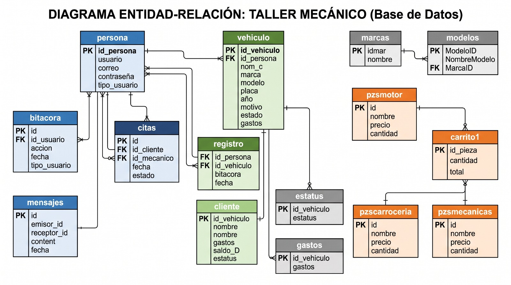
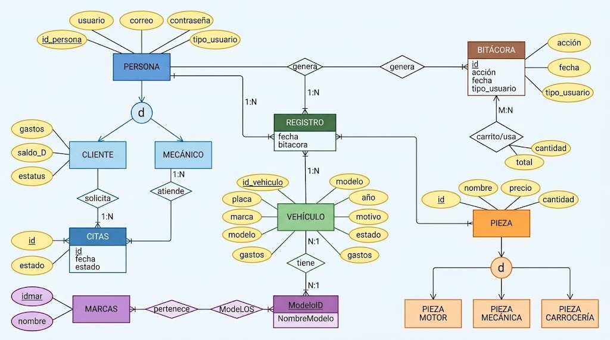

Equipo 15
Integrantes:
Hernandez Hernandez Cesar Eduardo
Arias Bazan Saul Zaid
Problematica
Los talleres de reparación automotriz suelen llevar el control de citas, el inventario de refacciones y el historial de los vehículos de forma manual o en documentos desorganizados. Esto provoca pérdida de información sobre servicios previos, falta de stock de piezas clave durante una reparación, tiempos de espera prolongados para los clientes y conflictos de logística al asignar reparaciones a los mecánicos. El proyecto busca diseñar la estructura de datos que centralice y automatice la relación entre clientes, automóviles, personal y productos.
Diagrama entidad relacion:

Diagrama entidad relacion extendido:

Reposiorio del Equipo